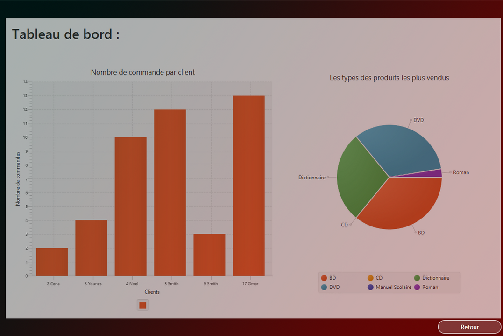
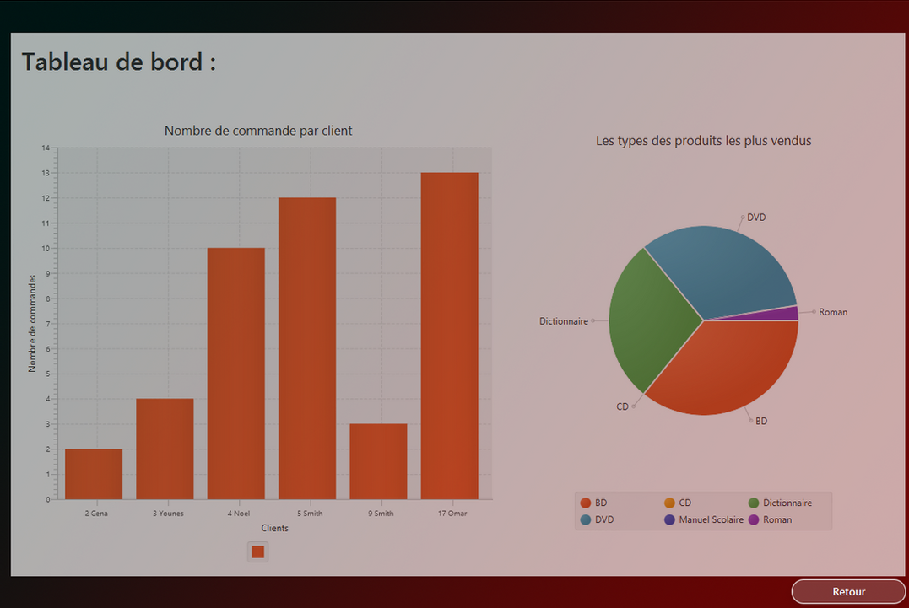
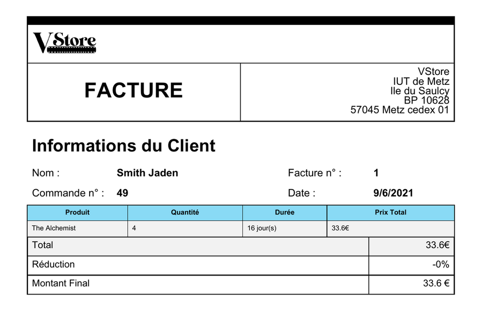
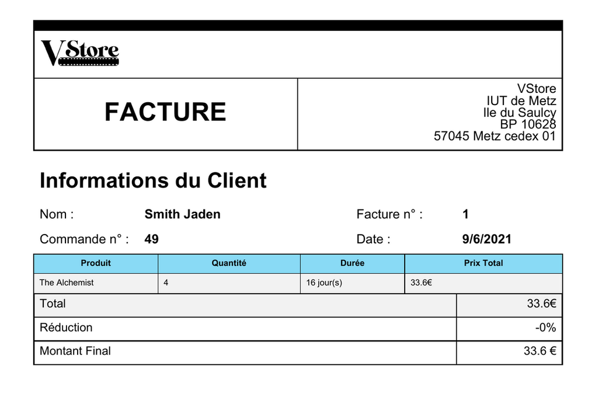

Web
Le Projet de Web consiste à réaliser un site web en groupe de 5 sur un des 3 sujets proposé (le chocolat, les jeux vidéos ou l'écologie)
Le but étant de réaliser plusieurs page web en abordant différents sous thèmes du sujet.
Le projet avait donc 3 contraintes majeures :
- Créer une version classique ainsi qu'une version mobile du site.
- Créer un seul CSS pour les 2 versions.
- Uniquement utiliser les technologies HTML et CSS
Pour ma part je me suis occupé de la réalisation d'une page d'un site concernant le chocolat.
La page que je devais réaliser était la page sur "La Fabrication du Chocolat".

Langage C
Le Projet de langage C consiste à réaliser un jeu de Nim sur un plateau dont on choisi la taille, ce jeu est appelé le Nimber.
Le but est de placer le pion dans la case en bas à droite.
Cela se complique lorsque les 2 joueurs doivent jouer avec le même pion.
Il faudra alors trouver une technique pour gagner, créer une IA pour jouer contre le joueur.
Le projet peut donc se separer en plusieurs parties au niveau de la programmation :
- D'une part on devra gérer l'affichage du plateau et du pion sur celui-ci.
- D'une autre part on devra trouver et coder la strategie gagnante.
- Il faudra également concevoir l'ordinateur et créer different niveau de difficulté.
- Enfin, il faudra proposer à l'utilisateur tous les choix de déplacements qui sont possibles.
Sur cette image, on peut voir le choix des parametres tout en haut.
Un peu plus bas, on peut observer lorsque l'ordinateur joue, et lorsque le jeu nous propose les differents déplacements possible.
Sur cette celle-ci, on peut voir le déroulement d'une partie.
Chacun leur tour, l'ordinateur et le joueur déplacent le pion.
La seule difference sera que l'on proposera au joueur les differents déplacements possibles,
contrairement à l'orinateur où ce ne sera pas le cas.
Gestion de Projet
Le Projet de Gestion de Projet était notre Projet Tutoré du 2eme Semestre.
L'objectif de celui-ci était de nous faire utiliser les outils de developpement et d'organisation de projet
tel que GitHub, MS Project, Adobe Photoshop et d'autre outils disponible en ligne.
Dans ce projet, nous devions créer un site web dans lequel nous presentions les differents projets des étudiants lors du DUT Informatique.
Ce projet nous imposait également des contraintes, les voici :
- Réaliser deux versions avec 2 chartes graphiques differentes :
- Une qui respecte la charte de l'IUT et du département
- Une autre avec une chartre libre
- Repartir le travail le plus équitablement possible
Par la suite, nous avons du prendre en main les fonctions de GitHub pour partager le code, prevenir le reste de l'équipe lorsque nous rencontrions un beug sur la conceptions du site, on une difficultée sur l'écriture des descriptions. Pour faciliter l'usage du repository sur GitHub, nous nous sommes créés une organisations. Voici le repository :

Le site de notre projet reste visible à cette adresse : https://blue1312.wixsite.com/projets-iut-metz
Programmation Orientée Objet (POO)
Le Projet de POO consiste à réaliser une application en Java, ainsi que de réaliser le diagramme UML (COO) correspondant.
L'application que nous devions réaliser devait permettre de gerer une vidéotheque. Pour ce qui est du diagramme UML, nous devions bien comprendre le sujet.
Pour l'application en elle même, il y avait 2 parties importantes :
- L'interface graphique.
- Le traitement des données.
L'application devra proposer de nombreuses fonctionnalité comme l'ajout, la suppression ou la modification d'un produit, d'un client ou encore d'une commande. Pour l'interface graphique, on utilisera la technologie Swift, qui est encore maintenue à l'heure actuelle. Voici quelques images du projet et de son interface graphique.
 

 
